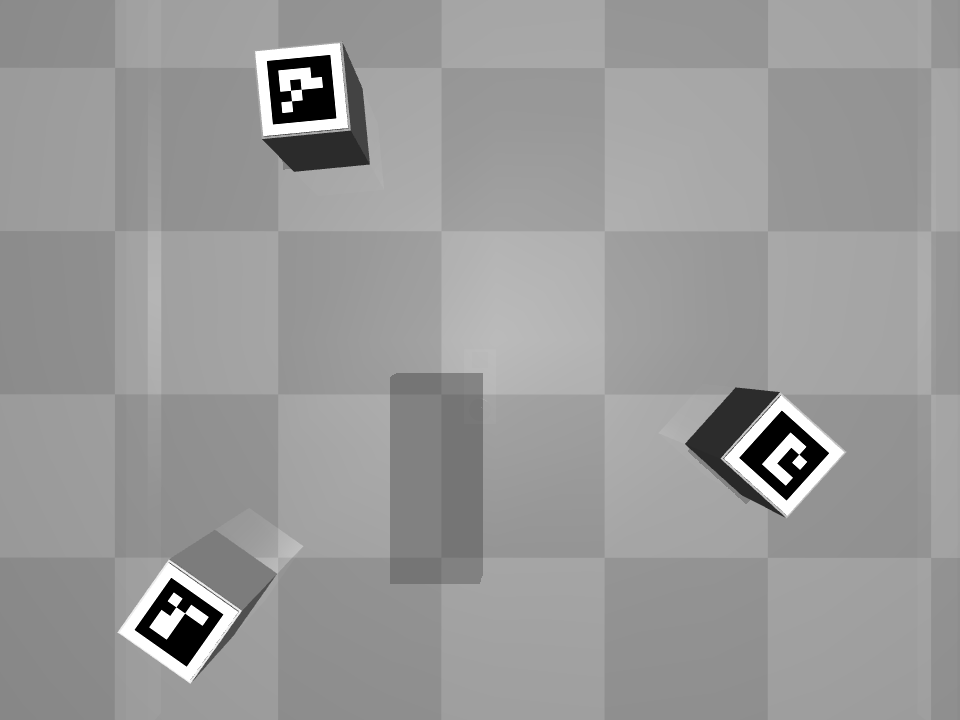
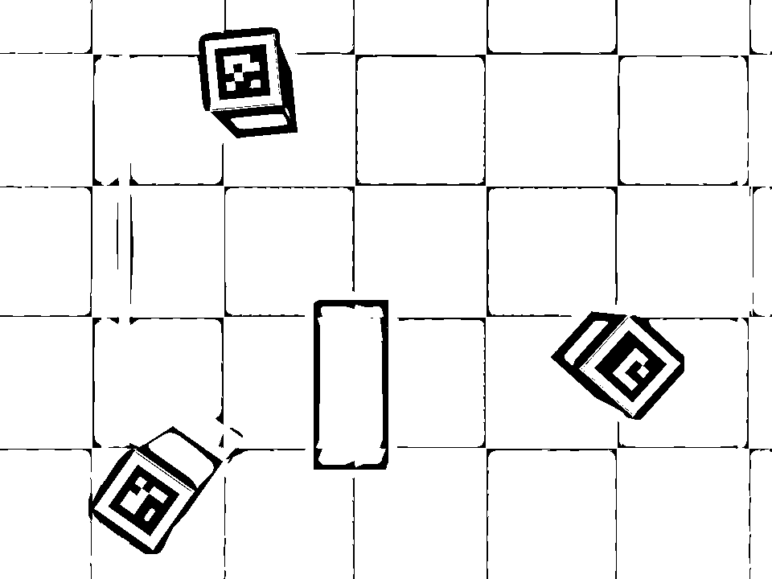
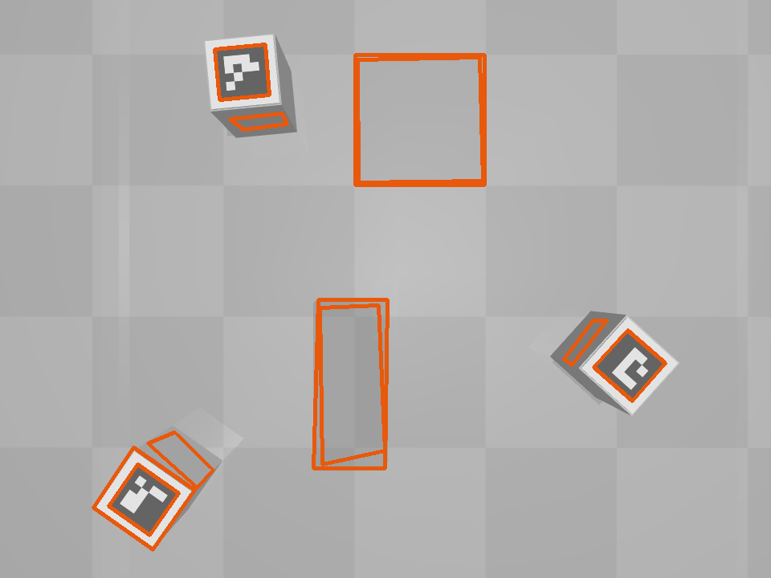
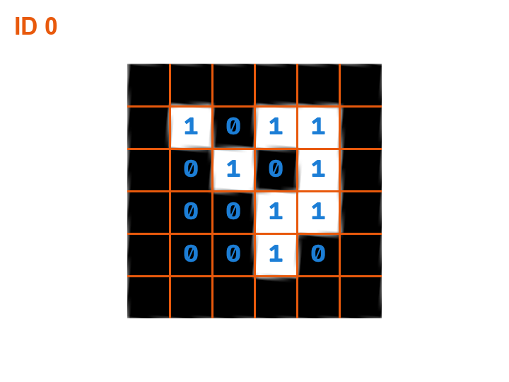
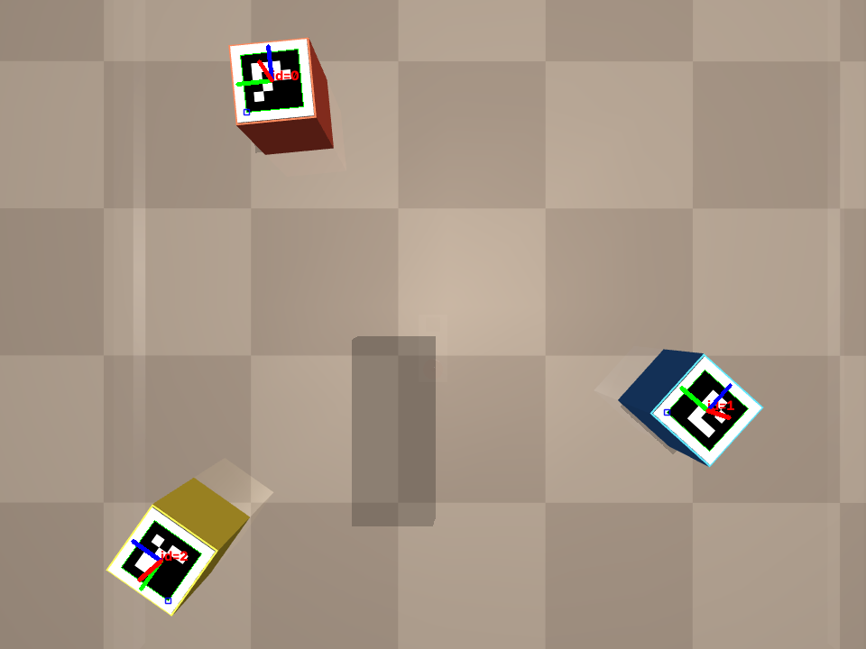
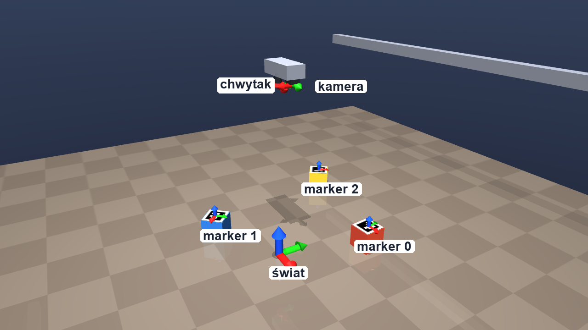

Chwytak ma kamerę i buduje wieżę z klocków.
Kamera daje piksele. Silniki potrzebują metrów w układzie świata.
Punkt (X, Y, Z) przed kamerą trafia na piksel:
$$u = f\,\frac{X}{Z} + c_x \qquad v = f\,\frac{Y}{Z} + c_y$$Rozmiar na obrazie: h = f · s / Z
Kamera chwytaka: f ≈ 514 px. Liczbę f razem ze środkiem obrazu nazywa się macierzą kamery K.
Daje ją g.camera_matrix().
W OpenCV: x obrazu w prawo, y w dół, Z do przodu (tam, gdzie patrzy kamera).




Pola szachownicy też są czworokątami, ale ich „bity” nie pasują do żadnego wzoru, więc zostają odrzucone.
gray = cv2.cvtColor(image, cv2.COLOR_RGB2GRAY)
params = cv2.aruco.DetectorParameters()
detector = cv2.aruco.ArucoDetector(ARUCO_DICT, params)
corners, ids, rejected = detector.detectMarkers(gray)
# corners: lista tablic 1×4×2 (piksele rogów)
# ids: tablica N×1 - albo None!
# rogi zgodnie z zegarem, od lewego-górnego
detect_markers() zamieńcie to na słownik {id: rogi 4×2}. Pamiętajcie o ids is None!
draw_markers(): ramki, ID i osie markerów (po PnP).Układ markera: środek w środku, x w prawo, y w górę, z „wychodzi” z markera.
cv2.solvePnP(rogi_3d, rogi_px, K, dist, flags=cv2.SOLVEPNP_IPPE_SQUARE) → rvec, tveccv2.Rodrigues(rvec) → macierz obrotu 3×3T_kamera_marker (za chwilę).rvec = obrót zapisany jako 3 liczby (oś × kąt). tvec = środek markera w układzie kamery [m].
Pomyłka o 1 piksel przy rogu markera:
$$\Delta_{\text{bok}} \approx \frac{Z}{f} \qquad \Delta_{\text{głąb}} \approx \frac{Z^2}{f\,s}$$Chwytak: marker s = 5 cm, Z ≈ 70 cm od kamery, f = 514 px:
→ 1,4 mm w bok
→ 19 mm w głąb
Głąb jest gorszy Z / s ≈ 14 razy: odległość bierze się z rozmiaru markera w pikselach, a ten prawie się nie zmienia, gdy marker odjedzie o centymetr.
Pozycję x, y klocka bierzemy z kamery.
Wysokość bierzemy z tego, co wiemy: klocek ma 7 cm, a leży na stole.
Dobra zasada w robotyce: nie mierz tego, co już wiesz.

Każda rzecz ma swój układ współrzędnych: świat, chwytak, kamera, każdy marker.
x czerwona, y zielona, z niebieska
Oba zdania są prawdziwe. Musimy umieć przeliczać.
Tak opisuje się położenie wszędzie: ROS (tf), gry 3D, Blender, Unity, ramiona przemysłowe.
moj_kod/transformacje.py.
Nie musicie umieć mnożyć macierzy. Wystarczy dobrze ułożyć domino →Indeksy w środku muszą się sklejać: Ta_b · Tb_c = Ta_c.
Nie sklejają się? Mnożysz w złej kolejności albo brakuje ogniwa.
Tb_a = invert_transform(Ta_b)
Ta sama strzałka, tylko w drugą stronę.
★ Dla chętnych: napisz własne invert_transform bez np.linalg.inv.
Widok zza kamery, w stronę sceny. PnP (OpenCV) daje T_kameraCV_marker, a pozycja kamery w MuJoCo jest w drugiej konwencji.
Różnią się obrotem o 180° wokół osi x.
To jeszcze jeden klocek domina, gotowy w kodzie: MUJOCO_FROM_OPENCV.
Potem:
transform_point(T_świat_marker, [0, 0, 0])yaw_from_transform(T_świat_marker)| klocek | z kamery (x, y) [m] | prawda [m] |
|---|---|---|
| 0 | (0,095; 0,256) | (0,093; 0,254) |
| 1 | (−0,193; −0,124) | (−0,193; −0,123) |
| 2 | (−0,324; 0,351) | (−0,323; 0,350) |
Wzorcowe rozwiązanie, obrócone klocki. Błąd 1–5 mm.
A @ B ≠ B @ A. Sprawdzaj, czy indeksy się sklejają.
OpenCV ≠ MuJoCo. Bez MUJOCO_FROM_OPENCV klocki są nad chwytakiem.
W metrach i bez białej ramki: 5 cm = 0.05.
atan2, cos, sin działają w radianach. Stopnie tylko do wypisywania.
Obrót o 90° wygląda tak samo. Wybierz najmniejszy obrót chwytaka.
ids is NoneGdy nie widać żadnego markera, detektor zwraca None, a nie pustą listę.
wizja.py jest gotowe)FOV_DEG, aż się zgadza (= kalibracja)wizja.py: co z osiami?Wydruki: materialy/markery_do_druku.pdf. macOS: zezwól Terminalowi na kamerę.
invert_transform (moj_kod/transformacje.py)Wszystkie polecenia chwytaka (g.move_to, g.grab…) są w ściągawce na górze dzien2/z4_wieza.py.